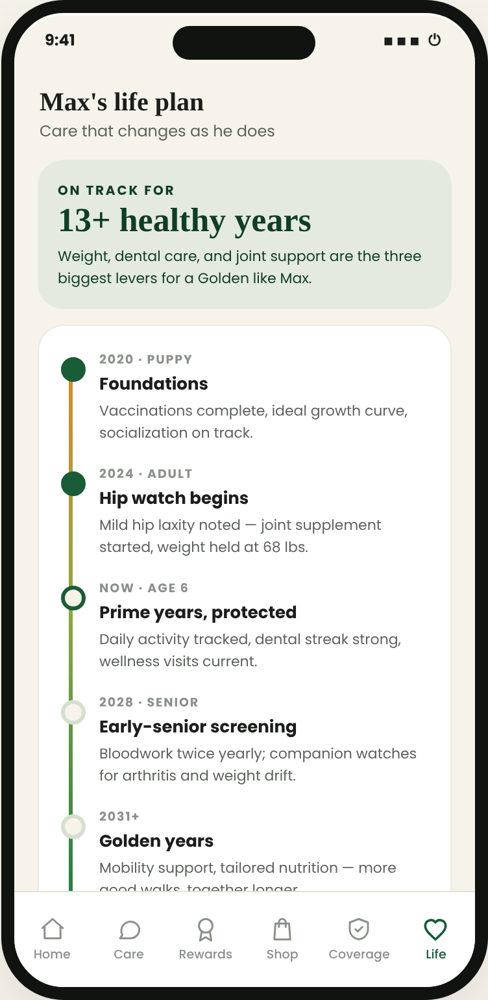
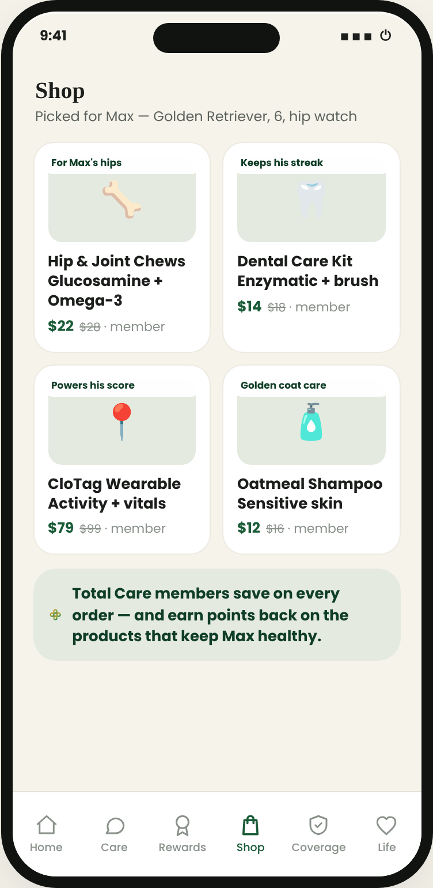
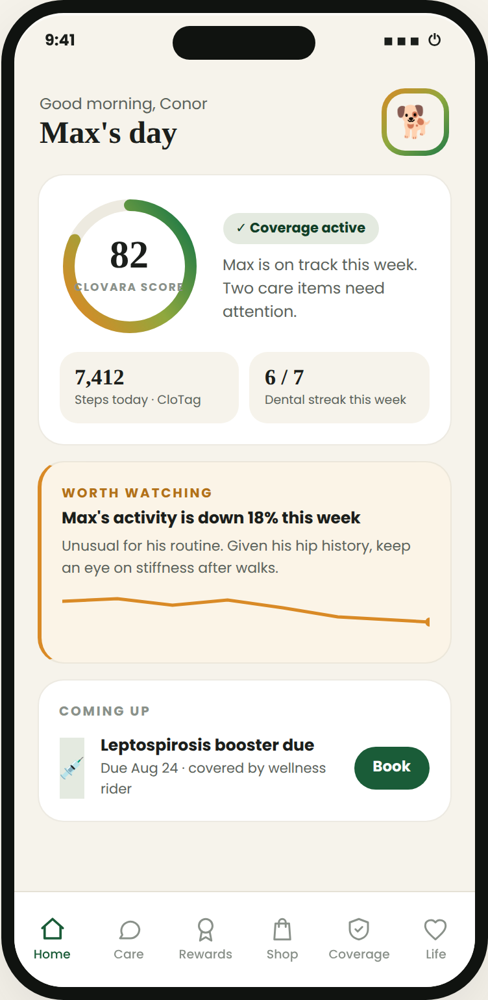
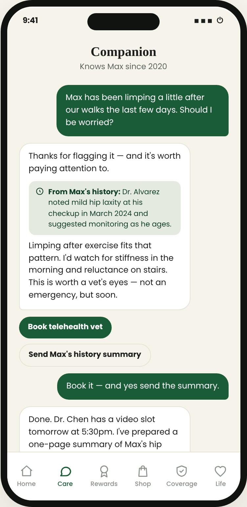
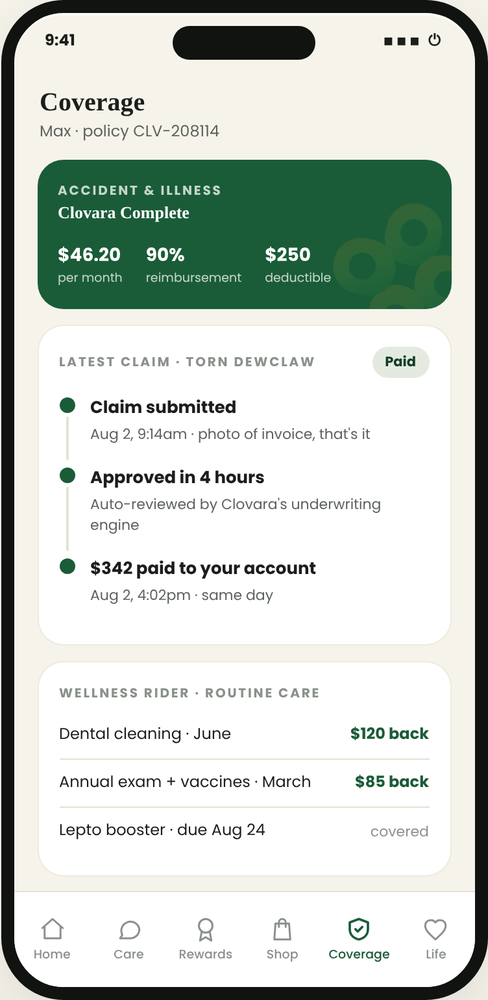

Clovara
ClovaraMore good years,
together.
Your pet's plan for life — from the very first hello.
ClovaraThe journey starts the day they arrive. A puppy's first sixteen weeks shape his whole life — so that's when the plan is at its busiest.Every stage, mapped ahead. Foundations, prime years, senior screening — his family sees what's coming years before it comes.Every year, understood more. Visits, weight, habits — his story compounds into care that keeps getting more his.
2020 · Week 9 · Hello, Max — his plan beginsMembers pay less on everything — and earn rewards on the products that keep him healthy.Honest labels. Where the evidence for a supplement is mixed, the card says so. In this aisle, that's radical.

Private by design. These conversations exist to help Max — they're never used in underwriting or claims.
Coverage that completes the plan — not a separate thing to shop for, compare, and dread.Routine care, given back. His wellness rider returns money for the visits and cleanings he should be having anyway.Prevention and protection, finally together. The same plan that keeps him well is the one that pays when he isn't.
Know where he is and what's next — his healthy-years outlook, his stage of life, and what's coming, from first vaccines to his golden years.
Do the right things, easily — answers that remember his history, habits that earn rewards, and a shelf picked for the dog he is today.
Covered when it counts — insurance that already knows him, claims answered in hours, and routine care given back.
Everything above, for every pet in the family — try it free, cancel anytime. Because the promise isn't a feature list. It's the years.
Clovara gives your pet a plan for life — know what's ahead, do the right things daily, and be covered in hours when something goes wrong.
Download as PDF ↓